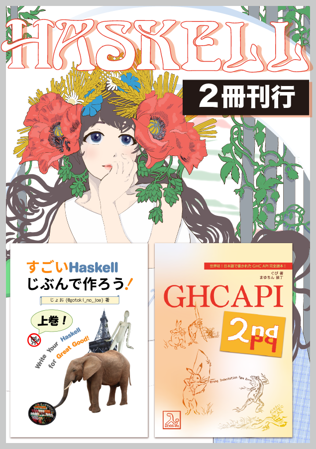
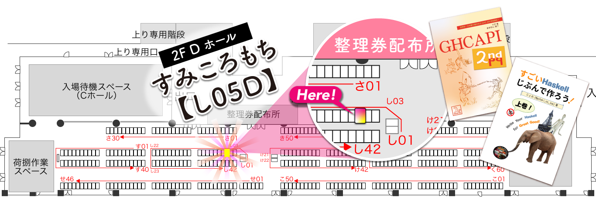
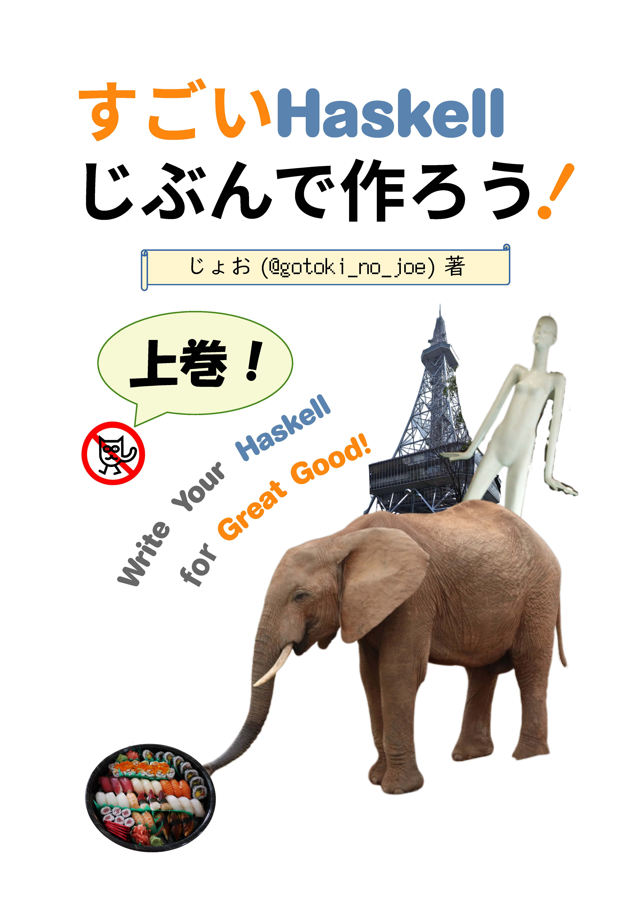
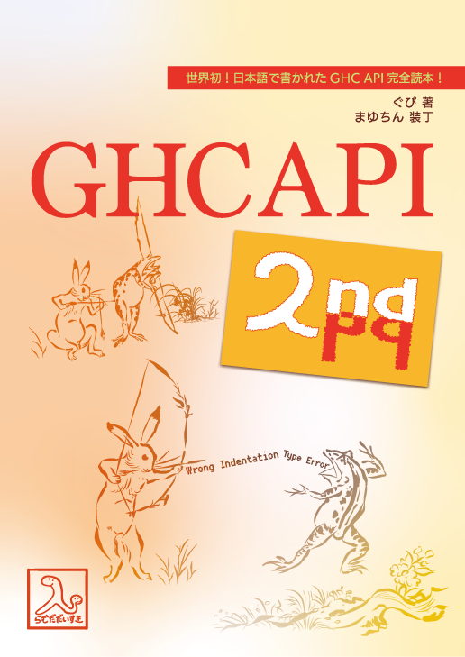

「すみころもち」は技術書典7に初参加します。本ページの情報は随時更新しています。

サークルカットはアルフォンス・ミュシャっぽい感じを意識しています。ミュシャ風のポスターは至る所で目にしますが、ミュシャの最高傑作は「スラヴ叙事詩」なので興味のある人は是非調べてみてください。
サークル場所

「すみころもち」は「し05D」です！
頒布情報
(1) すごいHaskell自分で作ろう！ Write Your Haskell for Great Good! (委託)

【著者】 @gotoki_no_joe
【概要】 Haskell でプログラミングするのは楽しい。ところで「Haskellをプログラミングする」のも楽しいのでは？じゃあやってみよう。というわけで、Haskell からヒラヒラを全て削り落して削りすぎたような関数型言語を作ります。
構文を設計し、意味を定義し、それらに従ってインタプリタを Haskell と TypeScript で実装します。
Haskell といいつつ普通でわかりやすい正格評価な処理系から始めて、その後で遅延評価をする処理系に取り組みます。必要になった部分だけを計算する遅延評価の仕組みが、組み込み演算やパターンマッチと協調する様子を自作して理解します。
おまけに TypeScript によるパーサコンビネータの作り方が付いています。
ごめんなさい！Haskell らしさの重要な柱である型システムについて執筆が間に合いませんでした。インデント構文、JavaScript を出力するコンパイラとともに、後編での執筆を予定しています。
【ページ数】132
【価格】1,000円
【目次 (仮)】
クリックすると pdf が開きます。
(2) GHC API 入門

【著者】 @waddlaw
【概要】 GHC API を使って具体的に動く何かを作る予定ですが、全然筆が進んでいないので内容未定・・・。(上記の書籍と比べると宣伝できるものが何も・・・)
頑張ります！
おすすめポイント
Haskell の処理系を作ってみたいなーって思っている人は「すごいHaskell自分で作ろう！ Write Your Haskell for Great Good!」がおすすめです！！！
TypeScript と Haskell という異なるパラダイムの言語による実装が一冊に収まっているので、とてもお得ですね。
応援よろしくお願いします〜。